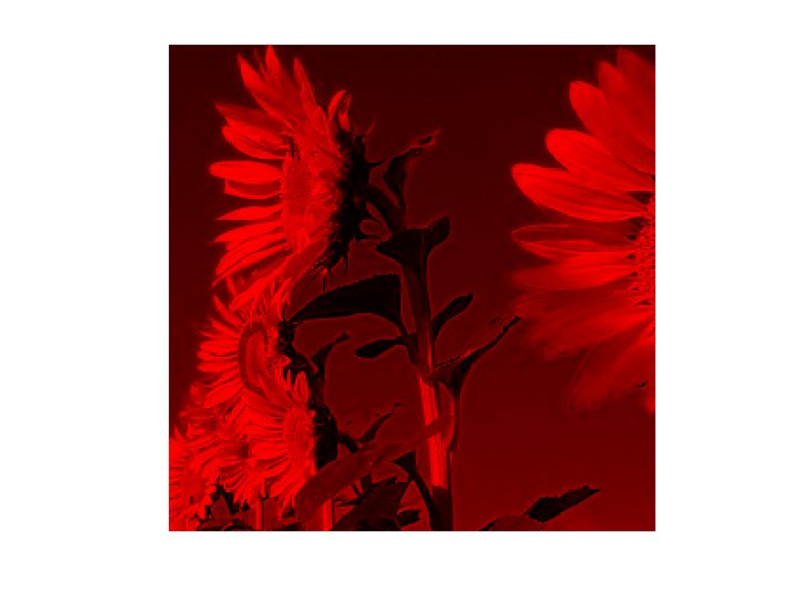
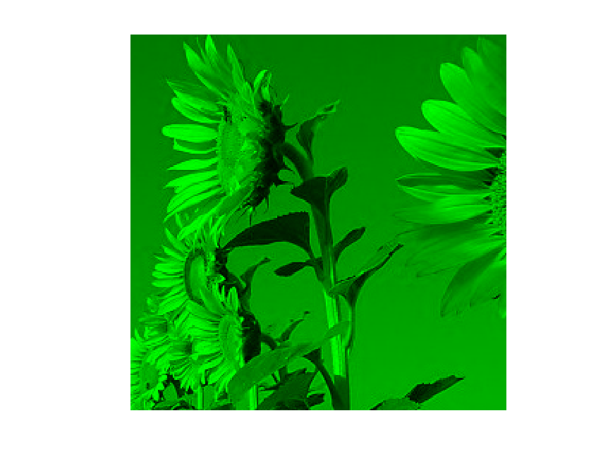
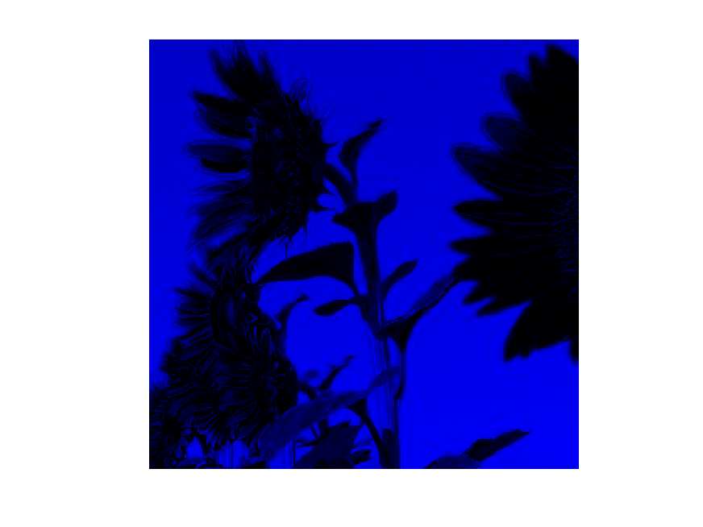
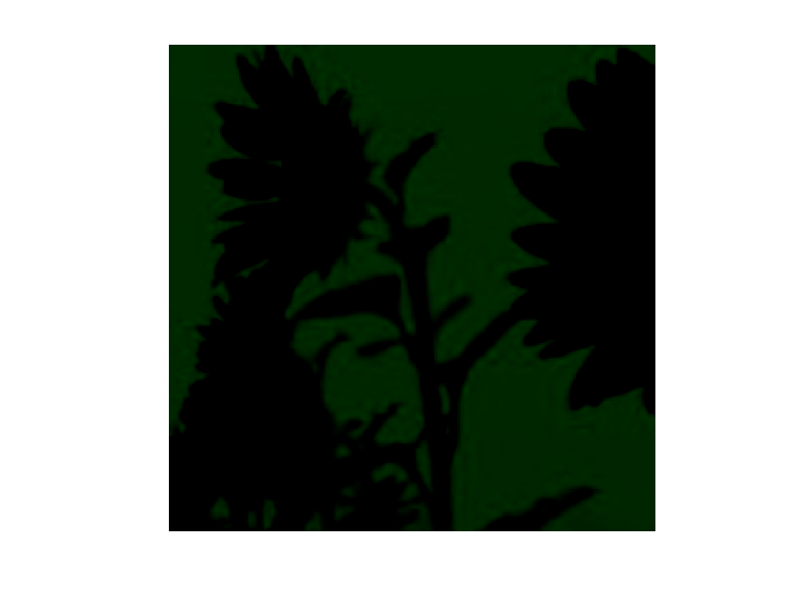
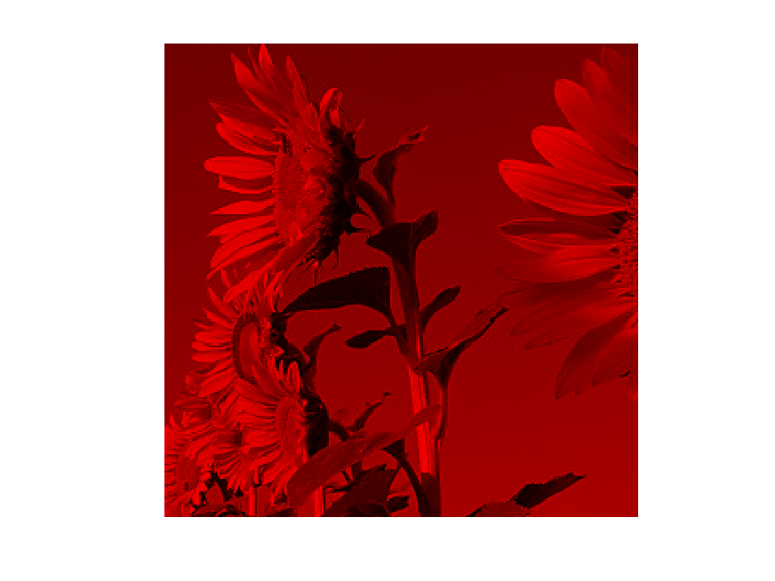
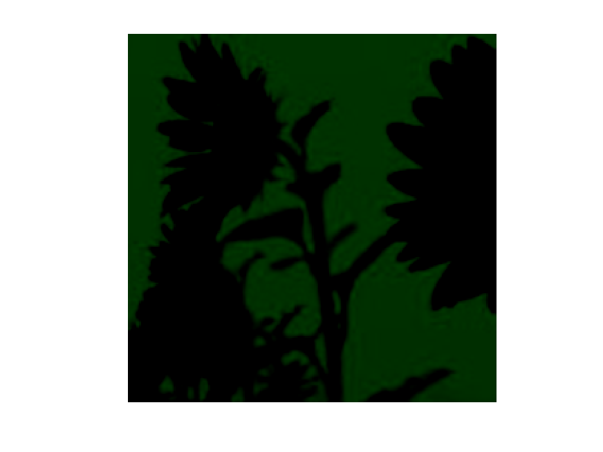
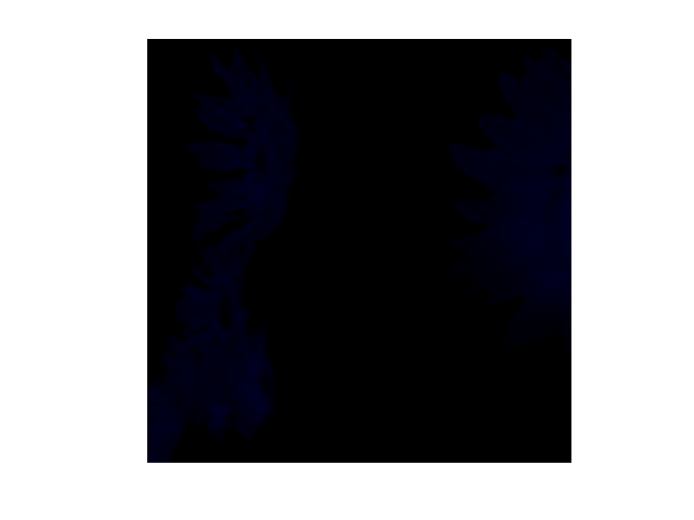

Joanna Dagil 231008
Zapoznanie sie z modelami kolorów i ich przekształceniami.
RGB = [255; 0; 0]; YUV = RGBtoYUV(RGB) RGB = [255; 0; 0]; kR = 0.299; kG = 0.587; kB = 0.114; YCbCr = RGBtoYCbCr(RGB, kR, kG, kB)
error: operator *: nonconformant arguments (op1 is 3x3, op2 is 1x3) in: RGB = [255; 0; 0]; YUV = RGBtoYUV(RGB) RGB = [255; 0; 0]; kR = 0.299; kG = 0.587; kB = 0.114; YCbCr = RGBtoYCbCr(RGB, kR, kG, kB)
gdzie macierz przekształcenia zdefiniowana jest przez współczynniki [kR, kG, kB], a argumentem wyjściowym macierz obrazu w formacie YCbCr. Przykładowe wartości współczynników to kR = 0.299, kG = 0.587 oraz kB = 0.114).
% Ścieżki w pierwotnym obrazie Im = imread('obraz.bmp'); fig = 1; fig = show_mono(Im, fig); % Ścieżki w obrazie ImYUV = RGBtoYUV(double(Im)); fig = show_mono(uint8(ImYUV), fig); % Ścieżki w obrazie YCbCr ImYCbCr = RGBtoYCbCr(double(Im)); fig = show_mono(uint8(ImYCbCr), fig);






